좋은 지능은 모든 것을 생성해야 하는가?
이 보고서는 Welch Labs와 Yann LeCun의 인터뷰를 바탕으로, 생성형 자기지도학습이 영상에서 부딪히는 문제와 조인트 임베딩이 제안하는 대안을 분석한다. 핵심 경로는 비디오 예측의 블러 → 생성 대신 표현 학습 → 표현 붕괴 → Barlow Twins의 중복 감소 → DINOv3의 성능 도약 → 행동 조건부 JEPA 월드 모델이다. 영상은 JEPA가 LLM을 실제로 대체했다는 결과를 제시하지 않는다. 대신 왜 LeCun이 픽셀·토큰 생성보다 표현 공간의 예측과 계획을 차세대 지능의 토대로 보는지 설명한다.
언어 모델은 다음 단어를 맞히는 단순한 과제를 엄청난 규모로 확장해 놀라운 내부 표현을 얻었다. 그러나 같은 공식을 영상에 적용하면 미래가 선명해지는 대신 흐려진다. 이 실패를 LeCun은 스케일 부족이 아니라 목표 자체의 문제로 읽는다. 세상의 모든 디테일을 생성하려 하지 말고, 행동에 필요한 핵심 표현만 예측하자는 것이다.
이 보고서의 여섯 가지 결론
언어와 영상의 출력 공간은 다르다
언어는 유한한 토큰 확률로 불확실성을 보존할 수 있지만, 영상의 가능한 다음 프레임은 사실상 열거할 수 없다.
블러는 단순한 화질 문제가 아니다
여러 개의 가능한 미래를 픽셀 하나로 압축하면 평균이 되고, 그 평균은 흐릿한 공과 경계로 나타난다.
가치는 생성물이 아니라 표현에 있다
사전학습의 진짜 자산은 자동완성 결과보다 그 문제를 풀면서 모델 내부에 형성된 의미 구조다.
조인트 임베딩에는 붕괴 방지 장치가 필요하다
두 표현을 가깝게 만드는 목표만 두면 모든 입력을 같은 벡터로 보내는 자명한 해에 도달한다.
중복 감소가 대조 샘플을 대신했다
Barlow Twins는 교차상관 행렬을 단위행렬에 가깝게 만들어 유사성은 보존하고 표현 차원의 중복은 제거한다.
행동을 조건으로 넣으면 월드 모델이 된다
행동에 따른 다음 상태의 표현을 예측하고 목표 표현과 비교하면 탐색·계획·제어가 가능한 구조가 된다.
LeCun의 논지는 세 번의 전환으로 압축된다
하나의 뿌리에서 갈라진 두 개의 AI
생성형 언어 모델과 조인트 임베딩은 서로 무관한 발명이 아니라, 자기지도학습이라는 공통 질문에 대한 두 답변이다.
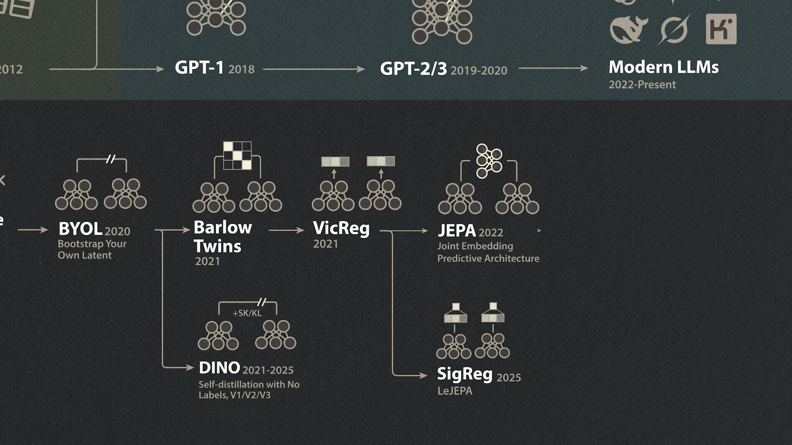
영상이 제시하는 역사는 두 줄로 갈라진다. 한쪽에는 GPT-1에서 GPT-2·GPT-3와 현대 LLM으로 이어지는 생성 경로가 있다. 다른 한쪽에는 Siamese Networks, 대조 학습, BYOL, Barlow Twins, VICReg, DINO, JEPA로 이어지는 조인트 임베딩 경로가 있다. 흥미로운 점은 LeCun이 CNN과 Siamese Networks를 통해 두 계보의 초기 형성에 모두 관여했다는 사실이다.
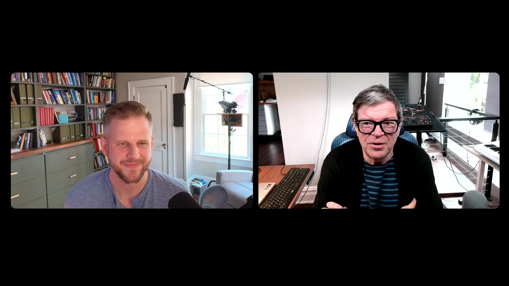
“지능은 케이크다”
LeCun은 2015년경부터 자기지도학습을 케이크의 몸통, 지도학습을 아이싱, 강화학습을 체리에 비유했다. 당시 주목받던 강화학습만으로 인간 수준의 지능에 접근하기에는 학습 효율이 지나치게 낮다는 문제 제기였다. 이후 언어 분야에서는 그의 비유와 닮은 순서가 실제로 자리 잡았다. 대규모 자기지도 사전학습 위에 지도 미세조정과 인간 피드백 기반 강화학습을 얹는 방식이다.
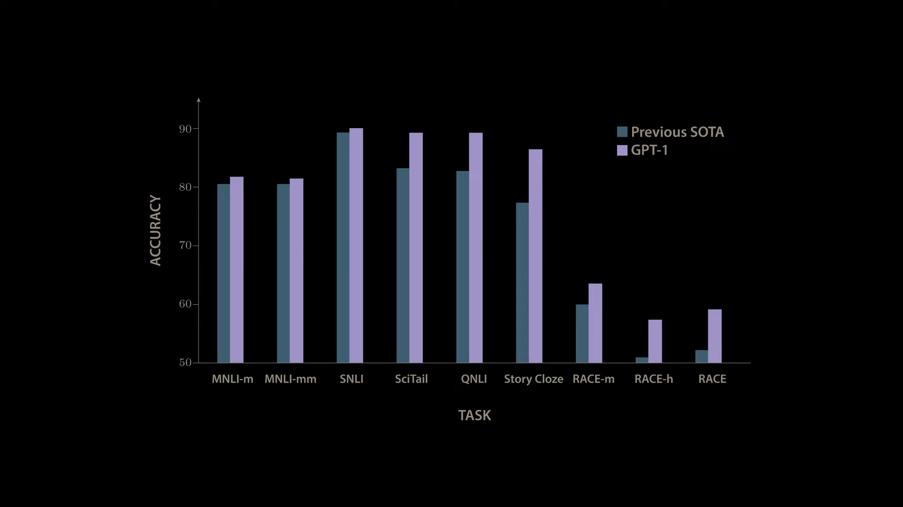
GPT-1의 성과는 과제마다 별도의 모델을 설계하던 흐름을 뒤집었다. 하나의 모델이 방대한 비라벨 텍스트에서 일반적인 표현을 먼저 학습하고, 소량의 라벨로 여러 과제에 적응했다. 언어에서 자기지도학습은 확장 가능한 범용 표현 학습법이 되었다.
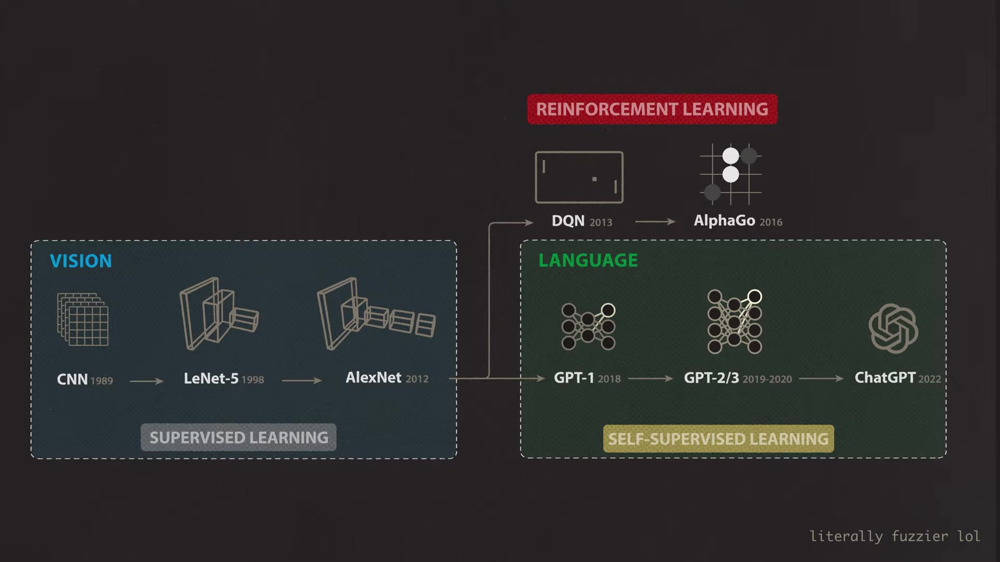
문제는 이 성공이 시각과 비디오에서 그대로 재현되지 않았다는 데 있다. AlexNet을 비롯한 비전 모델은 ImageNet의 사람이 붙인 라벨을 발판으로 성장했다. 언어와 같은 방식으로 다음 비디오 프레임을 생성하도록 학습하면, 모델은 의미 있는 세계 이해 대신 급속히 흐려지는 영상을 내놓았다.
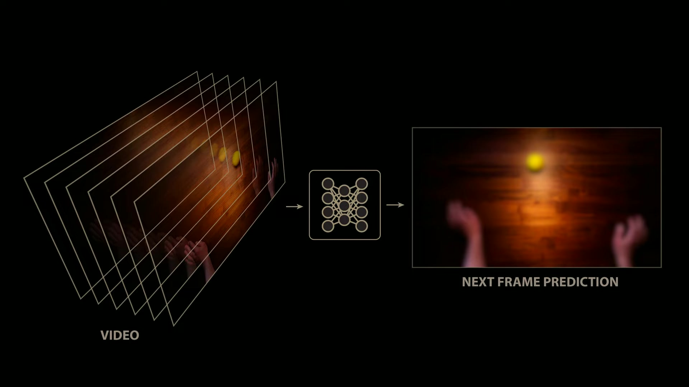
언어에서는 통했던 자기지도 생성 목표가, 왜 영상에서는 세계를 배우기보다 흐리게 만드는가? 영상이 설정하는 핵심 질문
블러는 불확실성을 평균낸 흔적이다
출력 공간의 조합적 폭발과 단일 픽셀 예측이라는 제약이 만나면, 모델이 택하는 합리적인 답은 ‘평균적인 미래’가 된다.
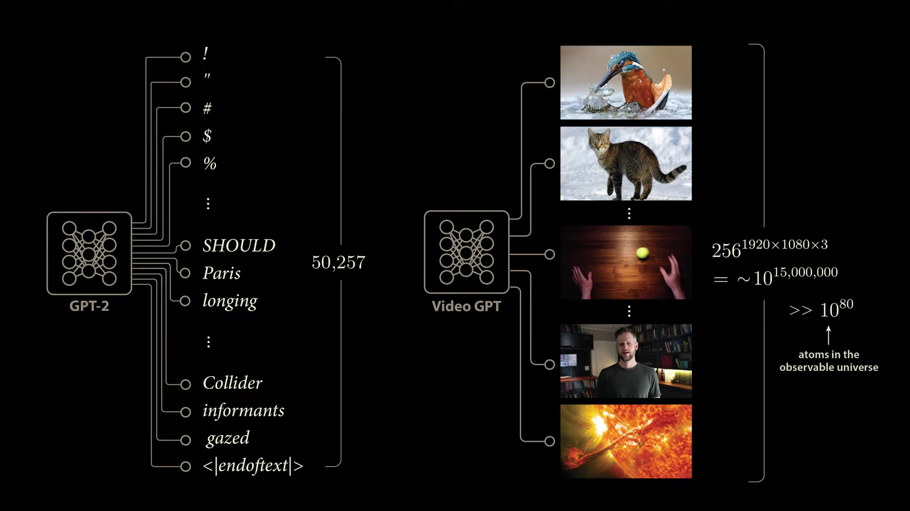
가능성을 확률로 나눈다
GPT-2는 50,257개의 이산 토큰마다 확률을 둘 수 있다. 문장의 다음 단어가 left 또는 right일 수 있다면 두 가능성을 별도의 출력으로 유지한다.
가능성을 한 장으로 합친다
비디오 모델은 가능한 모든 프레임에 별도 출력 노드를 만들 수 없다. 각 픽셀의 강도를 직접 예측하면 여러 미래가 하나의 평균 이미지로 겹친다.
관측 가능한 우주의 원자 수를 약 1080으로 잡아도 비교가 되지 않는다. 가능한 프레임을 토큰처럼 하나씩 열거하는 방식은 현실적인 선택지가 아니다.
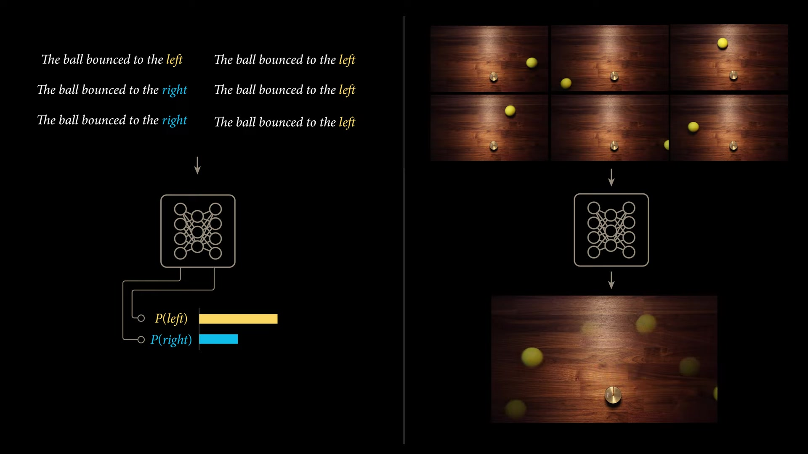
평균은 손실을 줄이는 통계적으로 합리적인 답이지만, 세계를 정확히 묘사하지는 않는다. 더구나 예측된 흐린 프레임을 다음 입력으로 다시 사용하면, 작은 불확실성이 매 단계 증폭된다. 영상이 표현한 “흐릿한 무”는 모델이 약해서라기보다 다중 모드의 미래를 단일 픽셀 출력으로 강제한 목적 함수의 결과다.
그렇다면 생성이 꼭 필요한가?
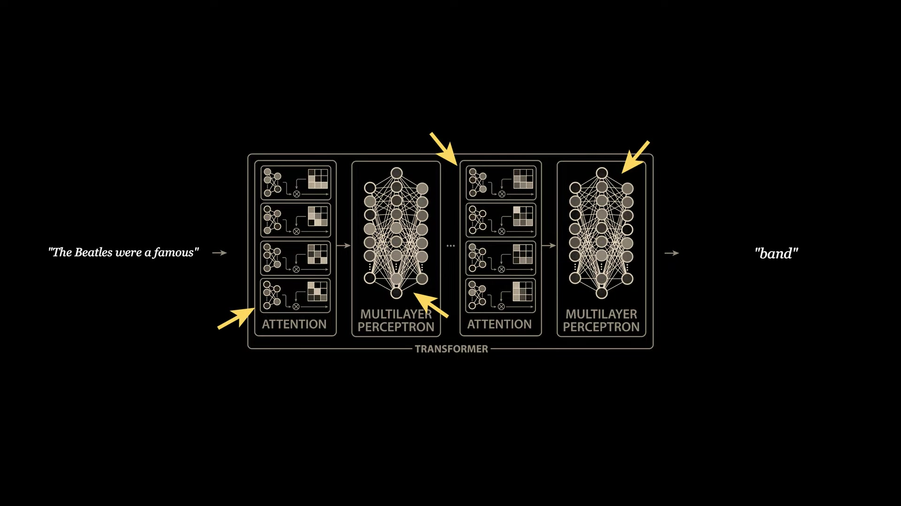
“The Beatles were a famous” 다음에 “band”를 맞히는 능력은 유용하지만, 사전학습이 남기는 더 큰 자산은 Beatles, 음악, 집단, 문장 구조의 관계가 정리된 내부 표현이다. 이 관점에서 생성은 목적이 아니라 표현을 얻기 위한 훈련 과제다. 그렇다면 이미지를 직접 만들어내지 않고도 좋은 표현만 학습할 수 있어야 한다.
생성 모델은 관측 공간의 모든 세부사항을 맞히도록 요구한다. 조인트 임베딩은 인코더를 통과해 살아남은 의미 있는 특징들 사이의 관계만 맞히도록 요구한다.
생성하지 않는 학습의 아킬레스건
같은 장면의 두 표현을 가깝게 만들면 의미 불변성을 배울 수 있다. 그러나 그 목표만으로는 아무것도 배우지 않는 완벽한 지름길이 생긴다.
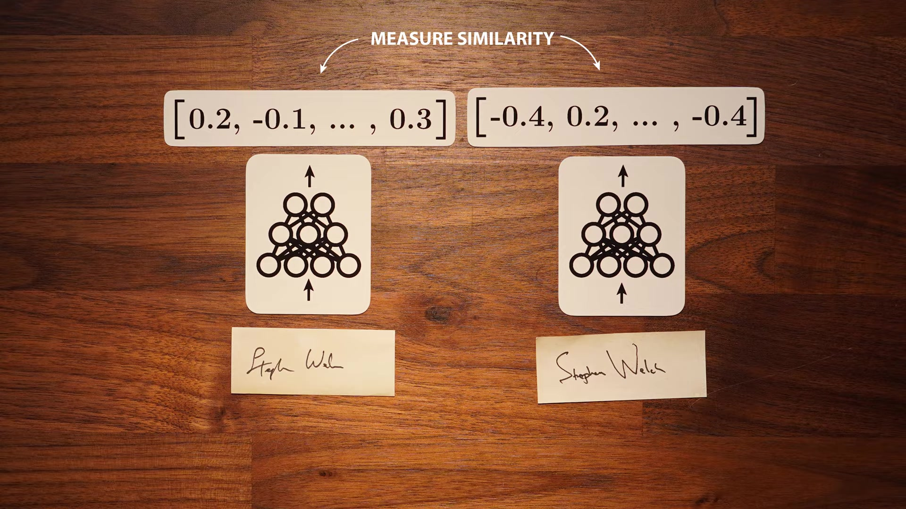
LeCun이 Bell Labs에서 개발한 Siamese Networks는 두 장의 서명을 동일한 네트워크의 복사본에 넣는다. 같은 사람의 서명은 가까운 임베딩으로, 위조 서명은 먼 임베딩으로 보내도록 훈련한다. 이 방식은 이미지를 복원하거나 생성하지 않고도 비교에 유용한 표현을 얻는다.
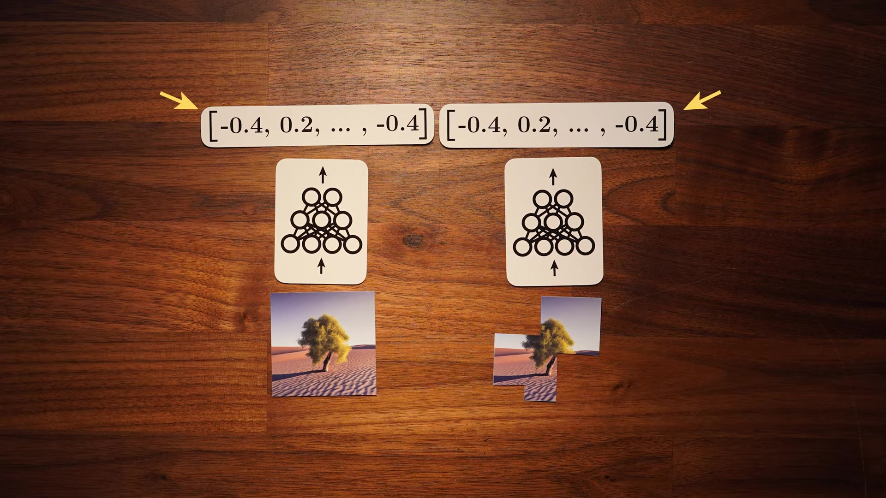
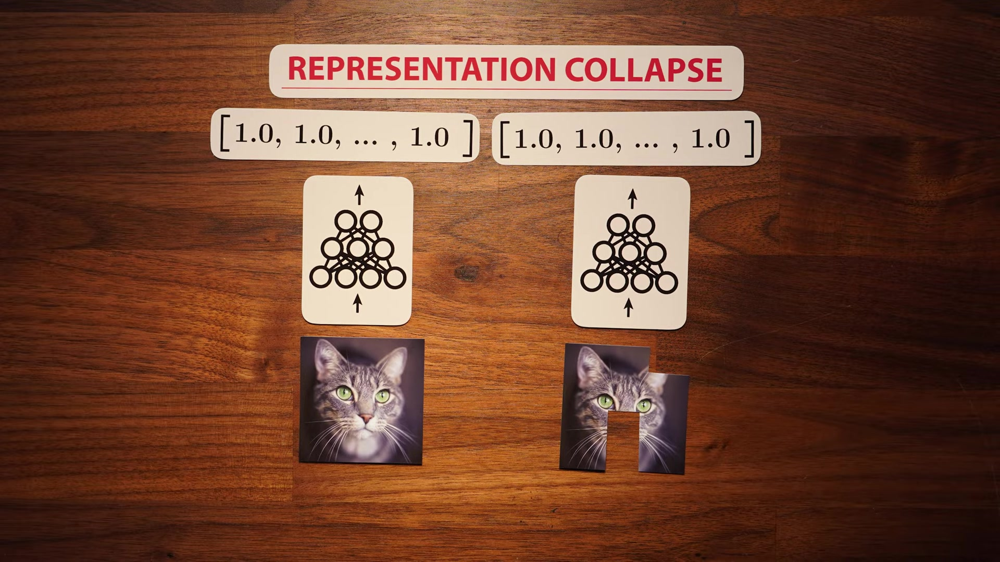
이미지의 원본과 변형본을 같은 표현으로 보내면 조명, 가림, 색 변화에 흔들리지 않는 의미적 불변성을 얻을 수 있다. 하지만 두 벡터를 가깝게 만들라는 조건만 주면 네트워크는 모든 입력에 똑같은 벡터를 출력한다. 손실은 완벽하지만 정보는 사라진다. 이것이 표현 붕괴다.
원조 Siamese Networks는 일치하지 않는 입력인 negative 쌍을 멀리 보내는 대조 학습으로 붕괴를 막았다. 그러나 표현 공간이 커질수록 충분히 다양한 negative 샘플을 구성하는 비용이 증가한다. 영상 속 LeCun은 최악의 경우 필요한 대조 샘플 수가 표현 차원에 지수적으로 늘어날 수 있다고 설명한다.
2020년 LeCun과 일하던 포스닥 Stéphane Deny는 이 문제에 이론신경과학의 오래된 아이디어를 연결했다. Barlow는 시각계가 뉴런 간 중복 정보를 줄이는 방향으로 감각 메시지를 변환한다고 보았다. 표현을 서로 같게 만드는 동시에, 각 표현 차원이 서로 다른 정보를 맡도록 만들면 붕괴를 피할 수 있다는 발상이었다.
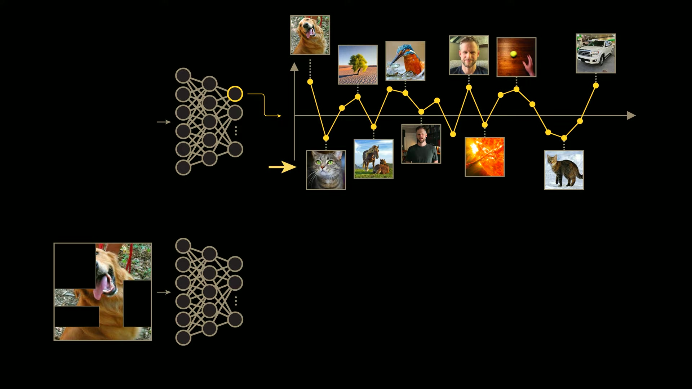
Barlow Twins: 단위행렬이 붕괴를 막는 법
같은 장면의 대응 표현은 일치시키되, 서로 다른 표현 차원은 중복되지 않도록 만든다.
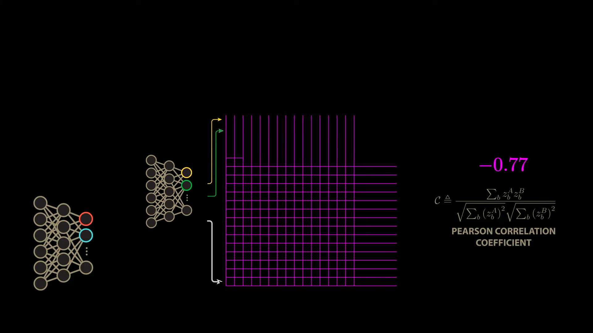
b는 배치의 이미지, i와 j는 두 네트워크의 임베딩 차원을 뜻한다. 모든 i·j 조합을 계산하면 표현 차원 사이의 교차상관 행렬이 만들어진다.
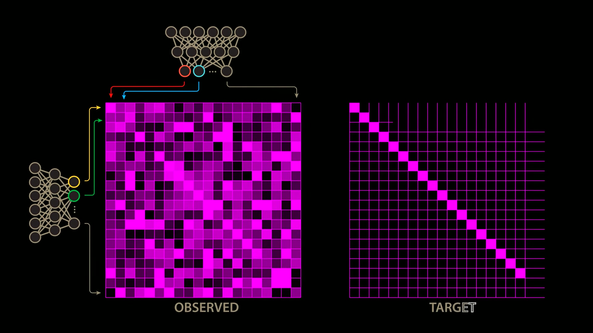
-
같은 이미지에서 두 개의 뷰를 만든다 크롭, 가림, 색 변화 등으로 입력을 다르게 만들되 의미는 유지한다.
-
두 뷰를 공유 가중치 인코더에 넣는다 각 뷰에서 고차원 임베딩을 얻고 배치 전체의 활성 패턴을 모은다.
-
대응 차원의 상관을 1로 보낸다 같은 의미의 두 뷰가 같은 특징을 인식하도록 표현의 불변성을 강화한다.
-
비대응 차원의 상관을 0으로 보낸다 각 차원이 다른 정보를 담게 해 중복과 표현 붕괴를 억제한다.
Barlow Twins의 손실은 교차상관 행렬과 단위행렬 사이의 편차다. 대각 성분을 1로 만드는 항은 두 뷰의 대응 특징을 일치시킨다. 비대각 성분을 0으로 만드는 항은 서로 다른 특징이 같은 정보를 반복하지 않도록 한다. 모든 입력이 같은 벡터라면 비대각 상관이 커지므로 더는 최적해가 될 수 없다.
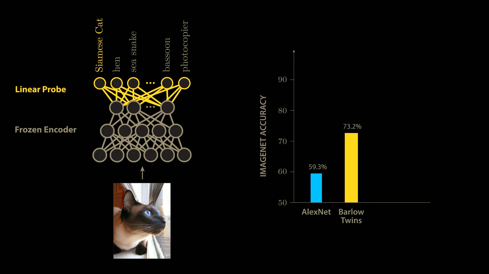
표현 품질은 인코더를 동결하고 얕은 선형 분류층만 학습하는 리니어 프로브로 평가한다. 복잡한 파인튜닝의 효과를 줄이고, 사전학습된 특징이 이미 클래스를 얼마나 잘 분리하는지 보는 방식이다. 영상이 제시한 Barlow Twins의 ImageNet 정확도는 73.2%로, AlexNet의 59.3%를 13.9%포인트 앞선다.
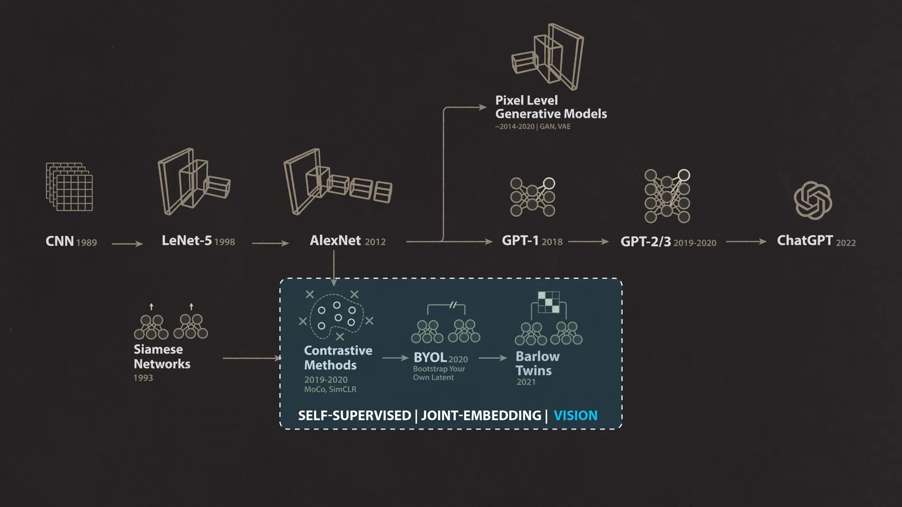
영상 설명에 따르면 논문 부록은 같은 네트워크 안의 서로 다른 뉴런을 비교하는 대안도 실험했다. 결과 차이는 크지 않았고, 구현이 단순한 두 번째 네트워크 출력과의 비교가 최종 방식으로 채택됐다.
DINOv3가 보여준 2025년의 전환점
라벨 없이 학습한 표현이 지도학습 모델의 ImageNet 성능과 사실상 동률에 도달했다.
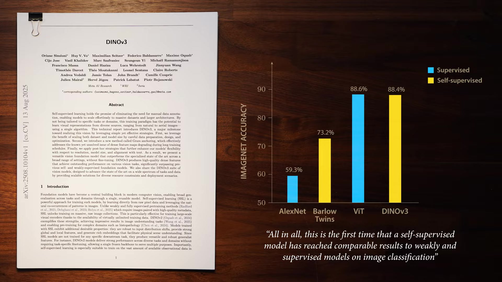
| 모델 | 연도 | 학습 방식 | 정확도 | 해석 |
|---|---|---|---|---|
| AlexNet | 2012 | 지도학습 | 59.3% | 대규모 라벨 기반 비전 학습의 출발점 |
| Barlow Twins | 2021 | 자기지도 + 리니어 프로브 | 73.2% | 중복 감소 기반 조인트 임베딩의 성과 |
| ViT | 2020 | 지도학습 | 88.6% | 영상이 비교 기준으로 제시한 지도학습 성능 |
| DINOv3 | 2025 | 자기지도학습 | 88.4% | 지도학습 모델과 사실상 동률 |
이 비교는 자기지도 표현의 장기적 발전을 보여주지만, 방법론만의 순수 효과를 측정하지는 않는다. AlexNet과 DINOv3 사이에는 13년의 아키텍처·데이터·연산 차이가 있다.
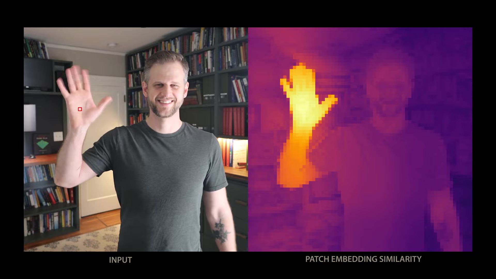
정확도 하나보다 더 인상적인 증거는 패치 임베딩의 구조다. DINO는 이미지의 각 패치를 벡터로 표현한다. 손바닥의 한 패치와 가까운 임베딩을 찾아 색으로 표시하면, 배경이 아니라 손의 다른 부위가 함께 선택된다. 모델은 “손”이라는 라벨을 받지 않았지만 형태와 의미를 공유하는 영역을 표현 공간에서 묶었다.
자기지도 비전의 성과는 이미지를 잘 복원한 것이 아니라, 라벨 없이도 세계의 의미적 경계를 드러낸 데 있다. 핵심 해석
JEPA에 행동을 더하면 월드 모델이 된다
다음 상태의 표현을 예측하고, 가능한 행동을 탐색해 목표 표현에 가까워지는 경로를 선택한다.
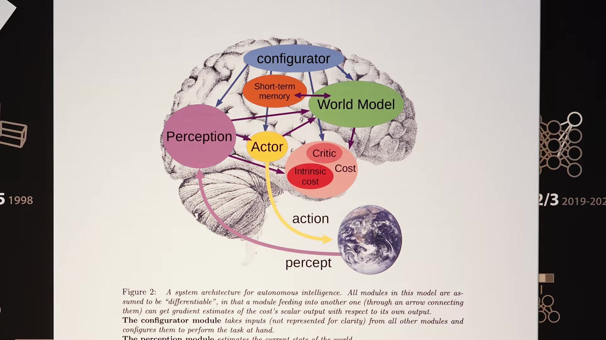
LeCun은 상식을 “무엇이 그럴듯하고 무엇이 불가능한지 알려주는 세계 모델들의 집합”으로 본다. 세계 모델이 있어야 적은 시행으로 새 기술을 배우고, 행동의 결과를 예상하며, 추론·계획·탐색· 상상을 수행할 수 있다는 주장이다.
영상은 인간 청소년이 약 20시간의 연습으로 운전의 기본을 익히는 반면, 자율주행 시스템은 수백만 시간의 데이터에도 높은 수준의 일반화에 어려움을 겪는다는 대비를 든다. 수치 자체보다 중요한 논점은 인간이 관찰 데이터만 축적하는 것이 아니라 물리적 세계의 지속성, 원인과 결과, 가능한 행동을 압축된 모델로 학습한다는 것이다.
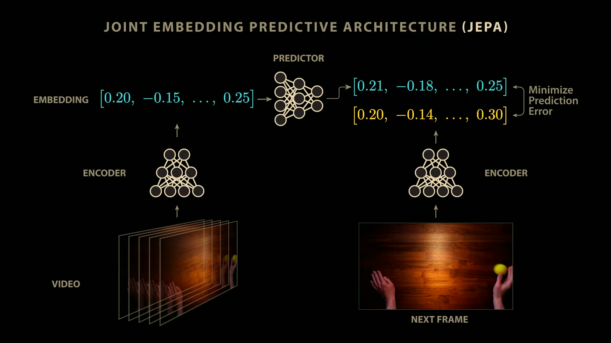
현재 비디오와 다음 프레임을 각각 인코딩하면 두 벡터가 생긴다. 예측기는 현재 벡터로부터 다음 벡터를 예상하고 실제 목표 벡터와의 오차를 줄인다. 인코더가 나뭇잎의 미세한 흔들림이나 센서 노이즈를 버리고 객체, 위치, 운동처럼 안정적인 특징을 보존한다면 예측기도 그 핵심만 모델링하면 된다.
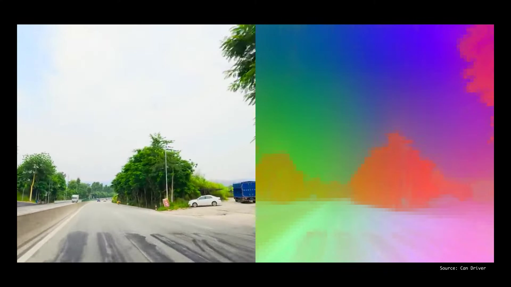
보이는 모든 것을 맞힌다
나뭇잎, 그림자, 질감, 센서 잡음처럼 행동과 무관하거나 예측 불가능한 픽셀도 손실에 포함한다.
살아남은 특징을 맞힌다
인코더가 보존한 객체와 상태의 핵심 특징을 표현 공간에서 예측해 모델링 부담을 줄인다.
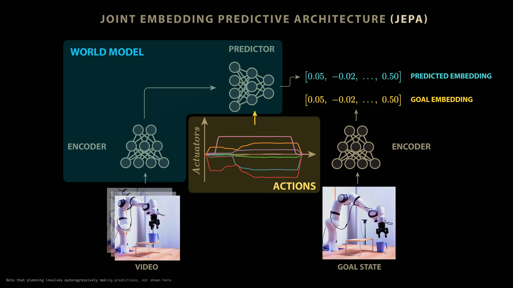
-
현재 상태를 표현한다 카메라 영상이나 센서 관측을 인코더에 넣어 현재 상태 임베딩을 얻는다.
-
후보 행동을 조건으로 미래를 예측한다 로봇 팔의 제어 신호처럼 실행 가능한 행동을 예측기의 추가 입력으로 넣는다.
-
목표 상태도 같은 공간에 표현한다 도달하려는 장면이나 상태를 인코딩해 목표 임베딩을 만든다.
-
오차가 가장 작은 행동 시퀀스를 찾는다 예측된 미래와 목표 표현의 거리를 최소화하도록 탐색·계획하고 선택한 행동을 실행한다.
LeCun은 이 구조를 고전 최적제어에 새로운 반전을 준 것으로 설명한다. 목표와 비용을 두고 행동 시퀀스를 최적화한다는 골격은 고전적이다. 다른 점은 환경의 동역학 모델을 사람이 쓰지 않고 데이터에서 학습하며, 더 나아가 최적화가 이루어지는 상태 표현 자체도 함께 학습한다는 데 있다.
“행동의 결과를 예측할 능력 없이 에이전틱 시스템을 만든다는 발상 자체를 이해할 수 없다.” Yann LeCun · 영상 인터뷰 취지
이 관점에서 신뢰할 수 있는 에이전트는 답을 연속 생성하는 시스템이 아니다. 행동 후보의 결과를 먼저 예측하고, 목표 달성과 안전 조건을 함께 만족하는 경로를 탐색하는 시스템이다. 추론의 중심도 자기회귀 생성에서 탐색과 계획으로 이동한다.
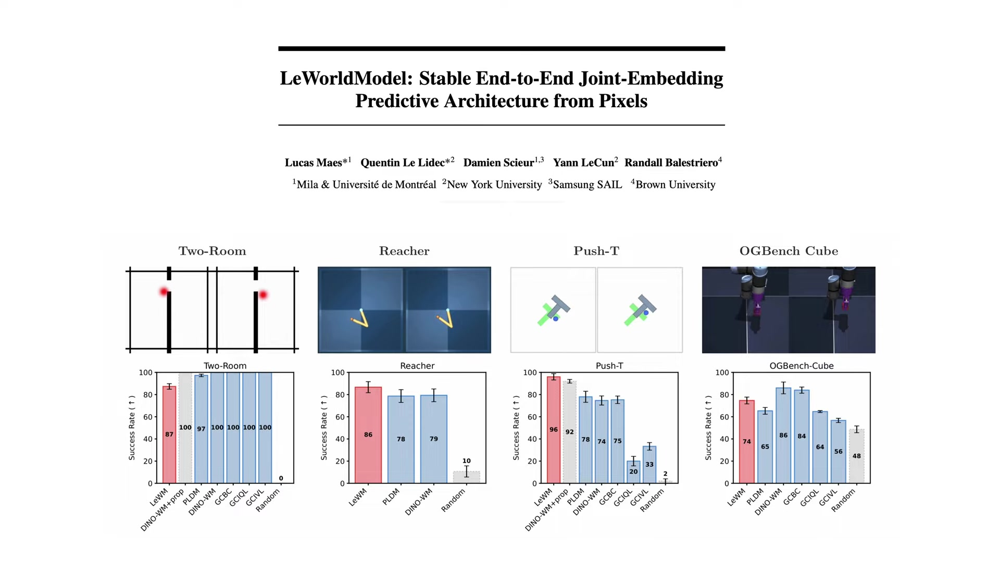
연구실 밖에서 무엇이 달라지는가
JEPA의 실질적 가치는 생성 모델과의 철학적 경쟁보다 라벨, 예측 자원, 제어 구조를 다시 설계하게 한다는 데 있다.
야외 로봇과 자율작업
흙, 먼지, 초목처럼 픽셀 비중은 크지만 예측 가치가 낮은 요소가 많은 환경에서 표현 공간 예측은 픽셀 재구성보다 효율적인 모델 예측 제어의 토대가 될 수 있다.
라벨 비용 절감
현장 영상에 정교한 라벨을 붙이기 어려운 건설·농업·제조 도메인에서는 자체 비디오를 이용한 자기지도 사전학습을 먼저 검토할 근거가 생긴다.
표현 중심 평가
동결 인코더와 리니어 프로브를 사용하면 대규모 파인튜닝 없이 사전학습 표현의 품질을 비교할 수 있다. 사내 모델 선택에 적용하기 쉬운 저비용 프로토콜이다.
실무 검토 체크리스트
- 우리 데이터에서 행동에 중요한 변화와 예측 불가능한 픽셀 변화를 구분할 수 있는가?
- 인코더의 표현 품질을 측정할 고정된 리니어 프로브 과제와 데이터 분할이 있는가?
- 표현 붕괴를 평균 분산, 특이값, 차원별 상관 등으로 지속적으로 감시하는가?
- 목표 임베딩과 실제 과업 성공률 사이의 정렬을 별도로 검증하는가?
- 월드 모델의 예측 오차가 계획 단계에서 누적될 때 안전 제약을 어떻게 적용할 것인가?
아직 승자는 정해지지 않았다
영상은 설득력 있는 계보를 제공하지만 JEPA가 LLM 또는 생성형 월드 모델보다 우월하다는 최종 실증은 제시하지 않는다.
판정은 Part 2로 유보
“But is JEPA good?” 챕터가 시작된 직후 LeWorldModel 예고로 넘어간다. 실제 비교 성능은 후속편의 증거를 함께 검토해야 한다.
비교 조건이 다르다
2012년 AlexNet과 2025년 DINOv3는 아키텍처, 데이터, 연산 규모가 모두 다르다. 하나의 막대그래프로 방법론의 순수 효과를 분리할 수 없다.
인터뷰 화자의 관점
LLM의 한계에 관한 강한 진술은 LeCun의 연구 관점이다. LLM 기반 멀티모달 모델과 생성형 월드 모델 진영의 반론은 영상에 충분히 포함되지 않는다.
리니어 프로브의 범위
분류에 선형 분리 가능한 표현이 계획·제어에도 좋은 표현이라는 보장은 없다. 동역학 예측과 장기 계획 평가는 별도로 필요하다.
표현 공간도 정보를 버린다
인코더가 예측하기 어려운 정보를 제거할 때 과업에 필요한 희귀 신호까지 버릴 수 있다. 무엇을 보존할지는 여전히 학습 목표와 데이터에 좌우된다.
자동 자막의 오류
수동 자막이 없어 기술 용어와 숫자는 화면 표기를 우선했다. 고유명사 자동 인식 오류가 많아 세부 인용은 원 논문과 대조해야 한다.
37분 영상을 다시 볼 때의 지도
핵심 논증과 기술 전환이 등장하는 구간을 중심으로 정리했다.
| 시각 | 챕터 | 핵심 역할 |
|---|---|---|
| 00:00 | Intro | 10억 달러 베팅과 JEPA 문제 설정 |
| 02:28 | The Problem with Deep Learning | 생성 경로와 조인트 임베딩 경로의 분기 |
| 04:17 | Intelligence is a Cake | 자기지도·지도·강화학습의 역할 구분 |
| 05:15 | The Rise of Generative AI | GPT-1과 언어 자기지도학습의 성공 |
| 08:00 | Blurry Images | 비디오 다음 프레임 생성의 실패 |
| 08:54 | Hudson River Trading | 스폰서 구간, 기술 분석에서 제외 |
| 11:16 | But why so Blurry? | 출력 공간과 불확실성 평균화 설명 |
| 13:30 | Do models need to be generative? | 생성에서 내부 표현으로 관점 전환 |
| 15:16 | Siamese Networks | 생성 없는 표현 학습의 기원 |
| 17:53 | Representation Collapse | 조인트 임베딩의 자명한 해 |
| 19:54 | Barlow Twins | 중복 감소와 단위행렬 손실 |
| 27:22 | DINO | 비전 자기지도학습의 성능 도약 |
| 28:58 | JEPA & World Models | 표현 예측과 행동 조건부 계획 |
| 34:09 | But is JEPA good? | LeWorldModel과 Part 2 예고 |
| 36:19 | Welch Labs Book | 도서 홍보 구간 |
| 항목 | 값 | 근거 위치 |
|---|---|---|
| GPT-2 어휘 크기 | 50,257 | 00:12:00 화면 |
| Full HD 프레임 경우의 수 | ≈ 1015,000,000 | 00:12:00 화면 계산 |
| 관측 가능한 우주의 원자 수 | ≈ 1080 | 00:12:00 비교 |
| GPT-1 사전학습 데이터 | 도서 약 7,000권 | 05:55 자막 |
| GPT-1 SOTA 벤치마크 | 9개 | 06:17 자막·그래프 |
| AlexNet ImageNet | 59.3% | 00:26:15·00:28:10 |
| Barlow Twins 리니어 프로브 | 73.2% | 00:26:15·00:28:10 |
| ViT 지도학습 | 88.6% | 00:28:10 그래프 |
| DINOv3 자기지도학습 | 88.4% | 00:28:10 그래프 |
| LeCun의 자금 조달 규모 | 10억 달러 | 00:08 자막·영상 프레이밍 |
| 2022 포지션 페이퍼 | 약 60쪽 | 29:06 자막 |
| 청소년 운전 습득 예시 | 약 20시간 | 29:36 인터뷰 |
읽는 법과 출처
이 글은 독립적인 실험 재현 보고서가 아니라 Welch Labs 영상의 논증을 구조화하고 실무적 함의를 덧붙인 분석 기사다. 영상에는 수동 자막이 없어 영어 자동 생성 자막을 1차 근거로 사용하고, 한국어 자동 번역 자막은 보조 대조에만 사용했다. 한국어 자막은 원어 대비 분량 손실이 커 기술 용어 확인에는 사용하지 않았다.
JEPA, VICReg, Stéphane Deny, Barlow Twins 등 자동 자막에서 오인식된 고유명사는 영상 화면과 논문 표기를 우선했다. 숫자와 수식 역시 프레임에서 판독 가능한 항목을 중심으로 기재했다. 08:54–11:16의 스폰서 구간과 36:19 이후 도서 홍보는 기술 장면 선정에서 제외했다.
- 주 영상: Welch Labs, “Yann LeCun's $1B Bet Against LLMs [Part 1]” , 게시일 2026-05-02, 37:24.
- 후속편: “Yann LeCun's $1B Bet Against LLMs [Part 2]” .
- H. B. Barlow, “Possible Principles Underlying the Transformations of Sensory Messages,” 1961. Barlow Twins의 중복 감소 논리를 설명하는 역사적 출발점으로 영상에 제시된다.
- DINOv3, arXiv:2508.10104, 2025-08-13. 영상은 자기지도 비전 모델이 지도학습 모델과 대등한 ImageNet 성능에 도달한 사례로 인용한다.
- Yann LeCun, “A Path Towards Autonomous Machine Intelligence,” 2022. 지각·월드 모델·기억·행위자·비용 모듈을 포함한 자율지능 아키텍처의 근거다.
- Meta AI, V-JEPA 연구 페이지 .
- LeCun 외, CNN 관련 1989년 논문 .
- LeCun 외, LeNet-5 관련 1998년 논문 .
- 영상 내 감사 표기: Yann LeCun, Stéphane Deny, David Fan, Nicolas Ballas.
독자에게 남는 질문
JEPA의 가장 강한 주장은 “LLM은 끝났다”가 아니다. 지능을 만드는 학습 목표가 관측의 모든 세부사항을 재생하는 일이어야 하는지, 아니면 행동의 결과를 예측하는 데 필요한 구조를 보존하는 일이어야 하는지 다시 묻는 데 있다. DINOv3는 표현 학습의 가능성을 보여줬지만, 계획 가능한 월드 모델의 우월성은 아직 검증 중이다. 따라서 다음에 확인할 것은 더 선명한 데모가 아니라 장기 예측 오차, 과업 성공률, 데이터 효율, 안전 제약 아래의 계획 성능이다.
생성형 AI가 “다음에 무엇이 보일까?”를 묻는다면, JEPA는 “다음에 무엇이 중요하게 달라질까, 그리고 내가 무엇을 하면 목표에 도달할까?”를 묻는다.